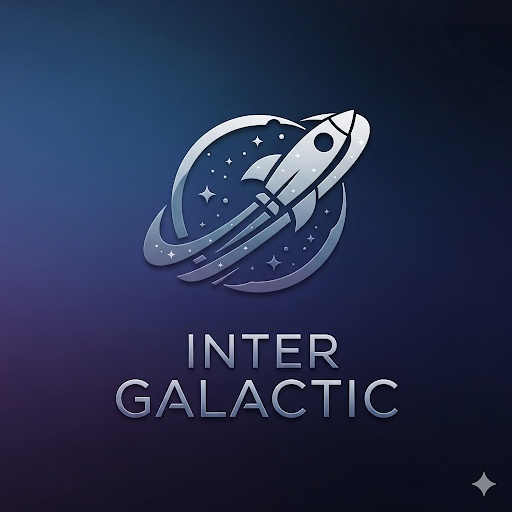
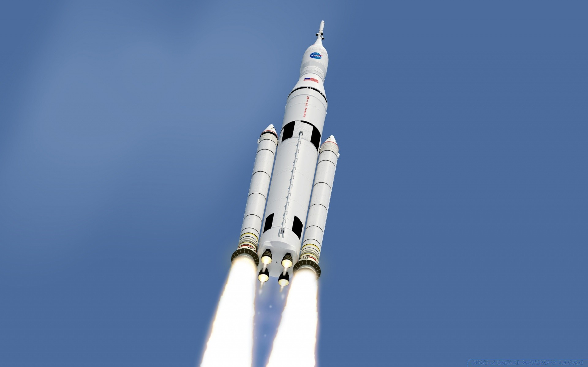

Inter Galactic родилась из студенческого проекта трёх друзей-инженеров, которые мечтали удешевить доступ к дальнему космосу. В арендованном боксе рядом с университетской лабораторией они собрали первый прототип ионного двигателя и оптического терминала связи — так родилась идея «дальнемагистральной» космической логистики: буксиры, ретрансляторы и дешёвые зонды для Луны и дальше. Девиз компании — «Делаем космос ближе».
2018 — первые наноспутники IG-01/02 для мониторинга космического мусора (совместный запуск попутной нагрузкой). Создана телеметрическая платформа Nebula Ground. 2019 — демонстрация прототипа плазменного блока IG-Drive (ионная тяга) на стенде; после неудачного теста на стратостате команда переходит к модульной архитектуре “OpenBus”. 2020 — коммерческий контракт на оптические терминалы LumenLink для межспутниковой связи. Сертификация наземных станций в трёх странах; первые 10 Гбит/с по лазеру между двумя малоспутниками. 2021 — запуск орбитального «буксира» IG-Horizon: демонстрация безопасного сближения и перемещения неработающего CubeSat на «орбитальную парковку». 2022 — проект Selene Relay: лунный ретранслятор данных для малых посадочных аппаратов. Создана служба планирования полётов SOVA с автономной навигацией. 2023 — контракт на доставку научных грузов к лунным орбитам (серия миссий Selene Express). Введены стандарты «двойного резервирования» питания и связи. 2024 — показана технология мягкого «пришвартовывания» к малым телам; эксперимент Aster-1: пролёт и съёмка околоземного астероида с передачей по лазерному каналу. 2025 — начало серийного производства IG-Drive Mk.III и LumenLink v2; подписаны партнёрства с университетами для программы открытых экспериментов «Космос для студентов».
Орбитальные буксиры IG-Horizon: перемещение полезных нагрузок, снятие с орбиты, обслуживание и дозаправка в перспективе. Связь LumenLink: компактные оптические терминалы 10–40 Гбит/с для межспутниковых линий и «Луна–Земля». Двигательные модули IG-Drive: ионная тяга с высокой удельной импульсностью для дальних миссий и экономичных коррекций орбиты. Платформа Nebula Ground: планирование полётов, телеметрия, распределённые наземные станции. Программа Selene Express: регулярная доставка небольших исследовательских полезных нагрузок к Луне (орбита/поверхность) по расписанию